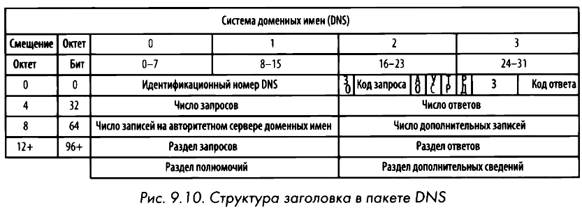

DNS
Domain Name System или Система доменных имен переводит доменные имена в IP-адреса. Доменные имена делятся на общедоступные и частные. Любой, кто подключен к интернету, может получить доступ к сайту по общедоступному домену. Частные имена используются в локальный сетях, например, внутри Windows Active Directory.
Протокол DNS функционирует в режиме "запрос-ответ". В частности, клиент, желающий преобразовать DNS-имя в IР-адрес, посылает запрос DNS-cepвepy, а тот - ответ с запрашиваемой информацией. DNS в качестве транспортного использует протокол UDP.
На DNS-cepвepax хранится база данных с записями ресурсов, содержащих сопоставления IР-адресов и доменных имен, которыми эти серверы делятся с клиентами и другими DNS-серверами. В Linux команда host [доменное имя] выдаёт IP-адрес. Добавить статическую запись DNS внутри хоста можно в файле /../etc/hosts.
Структура заголовка

- Запрос/Ответ, ЗО (Query/Response, QR). Обозначает, содержит ли пакет DNS-зaпpoc или DNS-ответ.
- Авторитетный ответ, АО (Authoritative Answers, АА). Если значение этого поля установлено в ответном пакете, это означает, что ответ поступил от авторитетного сервера доменных имен, обслуживающего данный домен.
- Усечение, УС (Truncation, ТС). Обозначает, что ответ был усечен, поскольку он оказался слишком большим и не поместился в пакет.
- Рекурсия доступна, РД (Recursion AvailaЫe, RA). Если значение этого поля установлено в ответе, это означает, что рекурсивные запросы поддерживаются на сервере доменных имен.
- Зарезервировано, З (Reserved, Z). По стандарту RFC 1035 в этом поле должны быть установлены все нули. Но оно иногда используется в качестве расширения поля RCode.
- Код ответа (Response Code, RCode). Служит в DNS-ответах для указания на наличие любых ошибок.
Наиболее употребительные типы записей ресурсов
| Значение | Тип | Описание |
|---|---|---|
| 1 | A | IPv4-адрес хоста |
| 2 | NS | Авторитетный сервер доменных имён |
| 5 | CNAME | Каноническое имя псевдонима |
| 15 | MX | Обмен почтой |
| 16 | TXT | Текстовая строка |
| 28 | AAAA | IPv6-адрес хоста |
| 251 | IXFR | Инкрементный перенос зоны |
| 252 | AXFR | Полный перенос зоны |
Рекурсия
В силу иерархического характера межсетевой структуры DNS все DNS-cepвepы должны быть в состоянии связываться друг с другом, чтобы получать ответы на запросы клиентов. Когда одному DNS-cepвepy требуется найти IР-адрес, он запрашивает другой DNS-cepвep от имени клиента, делающего первоначальный запрос. Этот процесс называется рекурсией.
Подобные серверы установлены в локальных сетях и у некоторых провайдерах. Все остальные серверы нерекурсивные. Если компьютер отправит запрос на сервер и сервер не имеет информацию по данному запросу, то сервер в качестве ответа вернет компьютеру IP адрес другого сервера, который возможно имеет некую информацию. Компьютеру придется делать запрос на другой сервер и так до тех пор, пока не получит требуемую информацию.
Передача зоны DNS
DNS-зoнa - это пространство имен (или группа), вести которое поручено DNS-серверу. Как правило, дополнительные DNS-серверы вводятся для разделением ответственности между субдоменами (почты, веба, БД).
Копирование записей главного сервера на другой подчиненный сервер DNS называется передачей зоны DNS. Для передачи (переноса) зоны используется протокол TCP. Например, системные администраторы таким образом могут настроить вспомогательный DNS-cepвep на случай отказа работы основного сервера. В свою очередь злоумышленники могут воспользоваться этим, найдя домен главного сервера DNS (NS-сервер). Запрос ниже срабатывает редко:
- Сначала получим список серверов ns для случайного доменного имени:
host -t ns google.com | cut -d " " -f 4
- Пробуем запросить сервер ns1 с помощью команды
host -l:
host -l google.com ns1.google.com
Имеются следующие виды переноса зон: - Полный перенос зоны (AXFR), при которых вся зона пересылается между устройствами. - Инкрементный перенос зоны (IXFR), при которых пересылается лишь часть данных зоны.
DNS Brute-Force
Поиск доменных имен методом грубой силы позволяет находить скрытые поддомены. С помощью простенького bash-скрипта и команды host можно перебрать домены из заготовленного файла (словаря).
Помимо этого существуют готовые решения:
fierce -dns [доменное имя]python sublist3r.py [доменное имя]python subbrute.py [доменное имя]
Главное, чтобы инструменты:
- Осуществляли быстрый перебор на основе файла словаря;
- Проверяли возможность передачи зоны DNS;
- Автоматизировали поиск в поисковых системах.
Утилиты nslookup и dig
nslookup - инструмент командной строки сетевого администрирования, предназначенный для получения информации о записях системы доменных имен.
dig (Domain Information Groper) представляет собой инструмент командной строки, используемый для выполнения DNS-запросов и получения ценной информации о доменах, IP-адресах и записях DNS.